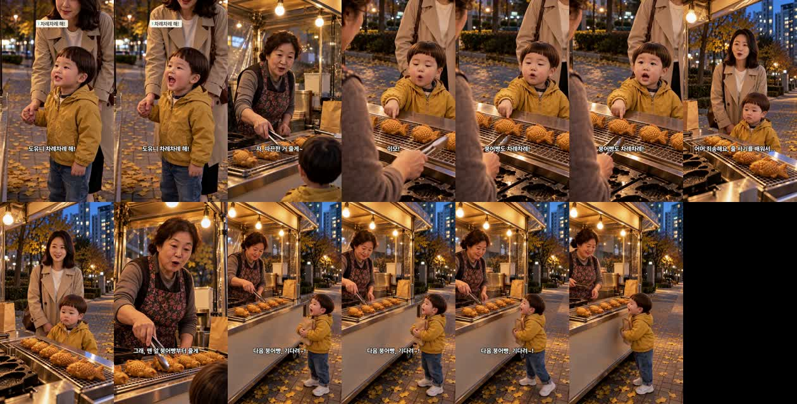

붕어빵 편 — 완성본 검수
2026-10-23 · doyoon-bungeoppang-line-001 · 판 R2 · 18.8초 · 업로드·승인 큐 등록 안 함
대사 · 실측
| 컷 | 화자 | 대사 | 받아쓰기 | 음높이 |
|---|---|---|---|---|
| 1 | 도윤 | 도유니 차례차례 해! | 도윤이 차례차례해! | 533Hz |
| 2 | 붕어빵 이모 | 자, 따끈한 거 줄게~ | 정확 | — |
| 3 | 도윤 | 이모! 붕어빵도 차례차례! | 정확 | 381Hz |
| 4 | 엄마 | 어머 죄송해요, 줄 서기를 배워서… | «줄썩이를» (빠른 발음) | — |
| 5 | 붕어빵 이모 | 그래, 맨 앞 붕어빵부터 줄게 | 정확 | — |
| 6 | 도윤 | 다음 붕어빵, 기다려~! | 정확 | 390Hz |
도윤이 목소리 높이 3컷 모두 기준 330Hz 위 · 아기 발음은 사전대로 «도유니» 한 군데(받아쓰기는 표준어로 고쳐 적음) · 키프레임 6장 한 번에 통과 · 첫 화면 제목 «차례차례 해!».
1.5초 간격 장면
